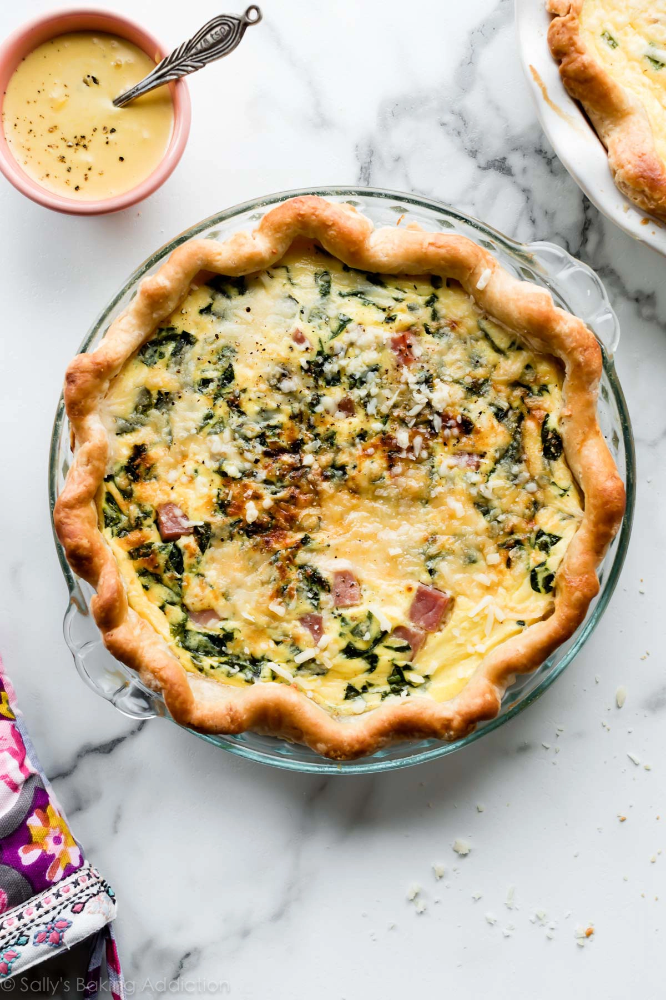

Quiche Recipe
Here we have yet again, another childhood favorite! This meal
is super convenient to make as a college student because I
can cook it up like a pie, slice it into pieces, and save it for
different breakfeast's throughout the week. It's cost effective
and delicious!
Ingredients:
- 10 ounces frozen chopped spinach
- 1 refrigerated pie crust
- 5 large eggs
- 3/4 cup milk
- 3/4 teaspoon kosher salt
- 1/4 teaspoon ground black pepper
- 1/4 teaspoon gound nutmeg
- 1/4 teaspoon hot sauce
- 1 cup diced cooked ham
- 3/4 cip 1/4 inch diced melty cheese (Gruyere orwhite cheddar)
- 2 green onions (finely chopped)
Instructions:
- Preheat the oven to 375 degrees F. If your frozen spinach is not
already thawed, thaw it in the microwave per the directions.
Place the spinach in a colander and squeeze out as much liquid
as possible. Set aside.
- Blind Bake the Crust (If your crust comes pre-formed in a
disposable pan). Place the pie dish on a baking sheet and
bake for 3 minutes. Remove it from the oven, prick it all
over with the tines of a fork, then return to the oven and
bake until light golden, about 10 minutes more. Reduce the
oven temperature to 350 degrees F. See notes if you use a
pie dough sheet or make your own dough.**
- Prepare the Filling: In a large mixing bowl, whisk together
the eggs, milk, salt, pepper, nutmeg, and Tabasco.
- Squeeze and blot more water out of the spinach
(you want it as dry as possible), then scatter
it evenly over the bottom of the blind-baked crust.
Sprinkle the ham, cheese, and onion over the
top of the spinach.
- Carefully pour the egg mixture over the top.
- Bake the Quiche: Bake the quiche on the baking sheet,
until a knife inserted 1 inch from the edge of the crust
comes out clean and the center is set, about 40 to 50
minutes. If at any point the crust begins to brown more
than you would like, protect it with foil or a pie crust
shield. Let the baked quiche rest for 5 to 10 minutes,
then slice and serve.
Nutritional Value:
SERVING: 1of 6
CALORIES: 255kcal
CARBOHYDRATES: 19g
PROTEIN: 16g
FAT: 13g
SATURATED FAT: 4g
POLYUNSATURATED FAT: 2g
MONOUNSATURATED FAT: 5g
TRANS FAT: 1g
CHOLESTEROL: 151mg
POTASSIUM: 308mg
FIBER: 2g
SUGAR: 3g
VITAMIN A: 5866IU
VITAMIN C: 3mg
CALCIUM: 186mg
IRON: 3mg
References:
Recipe was gathered from well-plated.com.